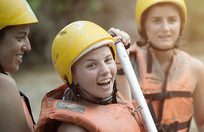

OCEAN WATER RAFTING
Our mission is to provide unforgettable and safe white water rafting adventures for thrill-seekers of all levels. Our purpose is to connect people with nature through exhilarating rafting experiences while prioritizing safety and environmental conservation. We believe in fostering a sense of adventure, teamwork, and respect for nature among our guests and team members. Motto: "Ride the Rapids, Create Memories"